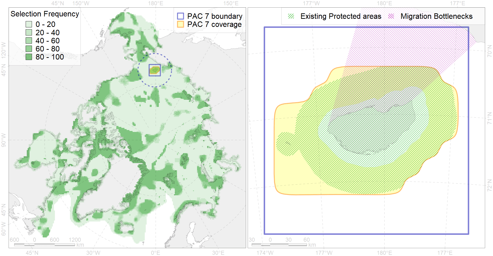

Region 7
Region 7
“ArcNet” scenario 33 achievement for region 7.
Use Accenter for advanced mode.

1
CFs inside of Region completely
10
CFs inside of Region at quarter
8
Complete-targets achievement by Region
11
Half-targets achievement by Region
| CF | Name | Target Achievement for Region | Proportion of Target Achievement in Region | Amount Proportion in Region |
|---|---|---|---|---|
| 3003 | Fast Ice distribution in the Wrangel Island region | 1666.7% | 100.0% | 100.0% |
| 3103 | polynya Wrangel | 832.9% | 100.0% | 100.0% |
| 7006 | Wrangel Island area of increased benthic biomass | 101.6% | 99.9% | 76.1% |
| 7246 | Wrangel Island and Schmidt Cape kelp patches (24-26) | 222.2% | 100.0% | 66.7% |
| 6081 | Thick-billed murre (Uria lomvia hecheri) breeding colonies | 71.2% | 40.3% | 38.5% |
| 6105 | 6105 Urilomviheckeri breeding colonies | 93.8% | 46.3% | 34.5% |
| 9022 | polar bear denning areas of CS (Chukchi Sea) subpopulation | 50.6% | 49.6% | 32.8% |
| 2038 | Ringed seal foraging areas in the Chukchi Sea | 126.8% | 49.8% | 30.9% |
| 5043 | Bowhead whale of the Bering-Chukchi-Beaufort population autumn core distribution | 42.1% | 41.3% | 30.6% |
| 2001 | Bearded seal foraging areas in the Chukchi Sea | 115.7% | 42.2% | 28.2% |
| 7044 | Western Chukchi transitional zone | 101.1% | 43.8% | 14.0% |
| 9004 | polar bear of the CS (Chukchi Sea) subpopulation distribution | 35.2% | 30.4% | 11.6% |
| 7081 | I.2.1.5. Shelf valleys | 37.9% | 18.8% | 10.1% |
| 3030 | Marginal Ice Zone distribution in July in the Chukchi Sea LME | 38.3% | 32.5% | 9.3% |
| 2008 | Bearded seal whelping areas in the Chukchi Sea | 34.0% | 22.6% | 8.3% |
| 2045 | Ringed seal whelping areas in the Chukchi Sea | 33.2% | 18.8% | 8.1% |
| 6103 | 6103 Urilomviarrrbreeding colonies | 13.8% | 10.4% | 6.8% |
| 7080 | I.2.1.4. Shelf plains | 173.3% | 19.8% | 6.6% |
| 1017 | Pacific Walrus haulouts | 9.0% | 8.8% | 6.5% |
| 6079 | Thick-billed murre (Uria lomvia arrra) breeding colonies | 8.5% | 7.9% | 6.1% |
| 2035 | Ribbon seal foraging areas in the Chukchi Sea | 49.0% | 13.5% | 6.1% |
| 6107 | 6107 Fratercula corniculata breeding colonies | 24.0% | 9.3% | 5.9% |
| 5116 | 5116 Beluga EBeaufort Sea autumn core | 23.3% | 17.1% | 5.7% |
| 6030 | Glaucous gull (Larus hyperboreus pallidissimus) breeding grounds | 47.0% | 7.9% | 5.6% |
| 6100 | 6100 Risstridactylpollicarius breeding colonies | 8.3% | 8.3% | 5.5% |
| 6048 | Black-legged kittiwake (Rissa tridactyla tridactyla) breeding colonies | 7.4% | 5.4% | 4.8% |
| 5105 | Bowhead whale of the Bering-Chukchi-Beaufort population autumn distribution | 12.8% | 10.1% | 3.8% |
| 4078 | Fish zoogeography, Arctic Region, High-Arctic Shelf Province, Wrangel – Beaufort District (10E) | 21.1% | 6.9% | 3.6% |
| 6011 | Brent goose (Branta bernicla nigricans) Asian breeding&moulting grounds | 19.8% | 7.3% | 3.6% |
| 6102 | 6102 Uriaalge inornatbreeding colonies | 9.4% | 5.6% | 3.6% |
| 6066 | Common eider (Somateria mollissima v-nigrum) breeding&moulting grounds | 9.4% | 9.2% | 3.2% |
| 4070 | Local forms of the White-Sea herring (Clupea pallasii) (F8) | 8.8% | 4.9% | 2.1% |
| 4042 | Range of the Saffron cod (Eleginus gracilis) (F 36) | 33.4% | 4.9% | 2.0% |
| 5052 | Gray whale summer feeding areas | 5.6% | 2.6% | 2.0% |
| 4077 | Fish zoogeography, Arctic Region, High-Arctic Shelf Province, Laptev – East-Siberian District (10D) | 16.3% | 8.6% | 2.0% |
| 1018 | Pacific Walrus Summer-Autumn Distribution | 5.9% | 2.5% | 1.4% |
| 6085 | Horned puffin (Fratercula corniculata) breeding colonies | 3.8% | 1.7% | 1.4% |
| 4058 | Range of the Arctic flounder (Liopsetta glacialis) (F48) | 22.4% | 2.9% | 1.3% |
| 4065 | Range of the Pacific Halibut (Reinhardtius hippoglossoides matsuurae) (F 50) | 23.8% | 2.4% | 0.8% |
| 6016 | Long-tailed duck (Clangula hyemalis) East Asian moulting&migration stopovers | 1.5% | 1.1% | 0.7% |
| 6077 | Common murre (Uria aalge inornata) breeding colonies | 0.8% | 0.5% | 0.4% |
| 4041 | Range of the Polar Cod (Boreogadus saida) (F35) | 2.6% | 1.0% | 0.3% |
| 4037 | Distribution of the Glacial cod (Arctogadus glacialis) (F34) | 3.4% | 0.8% | 0.3% |
| 5112 | Arctic Cetaceans (beluga, bowhead, narwhal) winter habitats as predicterd by MIZ | 0.4% | 0.4% | 0.2% |
| 7079 | I.2.1.3. Banks and shoals | 0.8% | 0.5% | 0.2% |
| 4014 | Feeding area of the Siberian whitefish (Coregonus pidschian) (F 18) | 0.0% | 0.0% | 0.0% |
| 3048 | Multiyear Ice distribution in September in the Chukchi Sea LME | 0.0% | 0.0% | 0.0% |
| 4004 | Range of the Pacific Capelin (Mallotus villosus catervarius) (F11) | 0.0% | 0.0% | 0.0% |